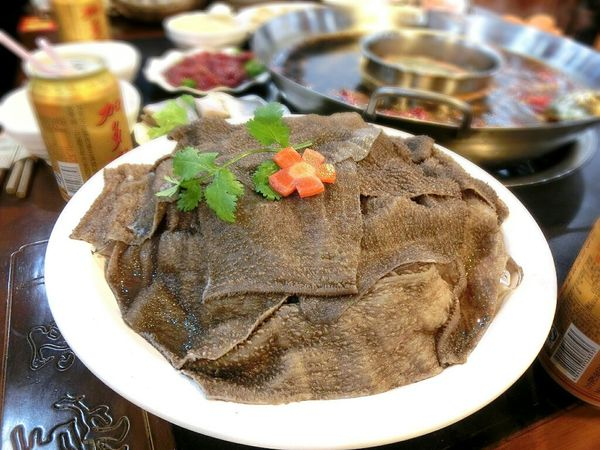

說到「重慶」，千萬別再說是四川的，因為沒注意到文化差異，可是會被笑的
「重慶重油厚、四川偏少油」，重慶人大多不說吃火鍋，而是燒火鍋
吃道地重慶火鍋，最特別的就是一定要用大鍋，鴛鴦鍋也不像台灣各半吃法，採用的是「鍋中有鍋」方式，非常特別
九宮格的麻辣湯鍋，在重慶火鍋節上，還有一次可容納50人共鍋的「天下第一鍋」！
在重慶，只要能下肚的都可以下鍋涮煮
而「牛毛肚」可說是重慶人的第一首選
至於牛毛肚的吃法，建議開鍋時第一個就先涮它
因為切得很薄，所以用筷子夾著毛肚涮個七八下就能吃
非常推薦來一份，好吃！
重慶人必點的「鵝腸（或鴨腸）
但吃法就不像牛毛肚這麼講究“七上八下”
而是夾一大把新鮮的鵝腸扔進湯裡
燙十幾秒就可以吃，煮熟會縮水，
吃起來脆脆的，且吸飽麻辣湯的鵝腸，真的很夠味